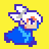

Jael
He is a long-time collaborator and friend. Jael is an incredibly talented pixel artist and game developer. We worked together on Tooth & Nail, GUNGLITCH and many more, and his art style really brings each game's world to life. Go check out his work!
Jael's Behance →